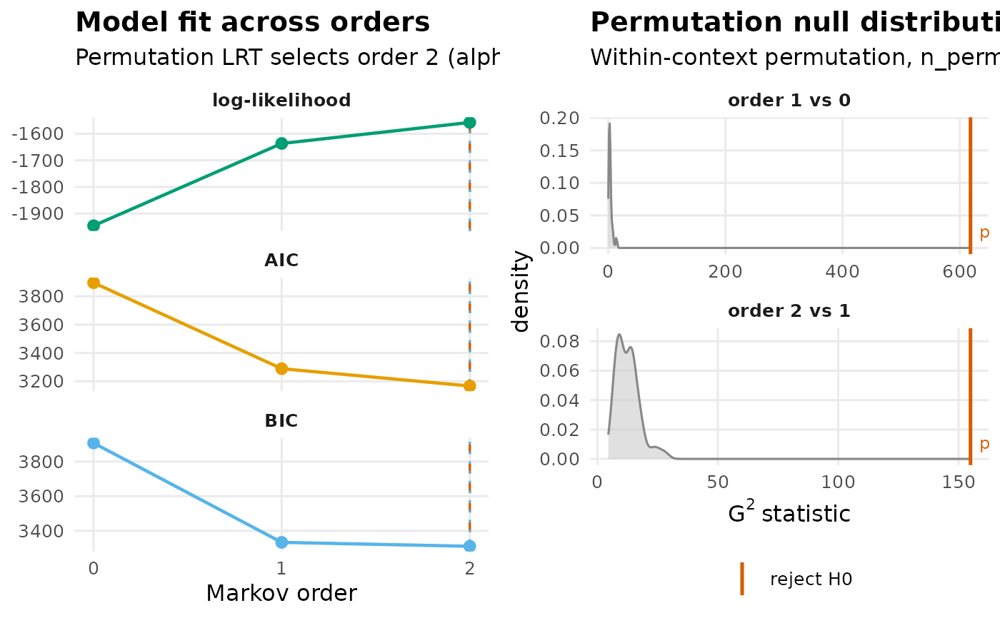

Print Method for net_markov_order
Usage
# S3 method for class 'net_markov_order'
print(x, ...)Examples
# \donttest{
# Is one previous state enough to predict the next one?
res <- markov_order_test(as.data.frame(trajectories),
max_order = 2, n_perm = 99, seed = 1)
res
#> Markov Order Test [within-w permutation, n_perm = 99, alpha = 0.050]
#> 131 sequences / 1865 observations / 3 states
#>
#> Selected order BIC: 2 AIC: 2 permutation-LRT: 2
#>
#> order loglik AIC BIC df g2 p_permutation p_asymptotic
#> 0 -1945.82 3895.63 3906.69 NA NA NA NA
#> 1 -1636.59 3289.19 3333.43 4 618.31 0.01 1.691520e-132
#> 2 -1557.51 3167.02 3310.83 12 154.97 0.01 5.554253e-27
#> significant
#> NA
#> TRUE
#> TRUE
summary(res)
#> order loglik AIC BIC df g2 p_permutation p_asymptotic
#> 1 0 -1945.815 3895.630 3906.692 NA NA NA NA
#> 2 1 -1636.593 3289.185 3333.434 4 618.3053 0.01 1.691520e-132
#> 3 2 -1557.511 3167.023 3310.829 12 154.9677 0.01 5.554253e-27
#> significant
#> 1 NA
#> 2 TRUE
#> 3 TRUE
plot(res)

# }